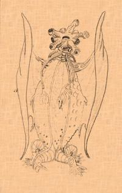
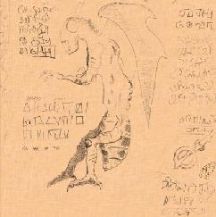
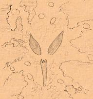

|


At the frozen Poles They raised mighty cities, and upon high places the temples of Those whome nature owns not and the Gods have cursed. And the spawn of the Old Ones covered the Earth, and Their children endureth throughout the ages. Ye shantaks of Leng are the work of Their hands, the Ghasts who dwelleth in Zin's primordial vaults know Them as their Lords. They have fathered the Na-Hag and the Gaunts that ride the Night; Great
Cthulhu is Their brother, the shaggoths Their slaves. The Dholes do homage
unto Them in the nighted vale of Pnoth and Gugs sing Their praises beneath
the peaks of ancient Throk. They have walked amidst the stars and They have walked the Earth. The City of Irem in the great desert has known Them; Leng in the Cold Waste has seen Their passing, the timeless citadel upon the cloud-vieled heights of unknown Kadath beareth Their mark. Wantonly the Old Ones trod the ways of darkness and Their blasphemies were great upon the Earth; all creation bowed beneath Their might and knew Them for Their wickedness. And the Elder Lords opened Their eyes and beheld the abominations of Those that ravaged the Earth. In Their wrath They set their hand against the Old Ones, staying Them in the midst of Their iniquity and casting Them forth from the Earth to the Void beyond the planes where chaos reigns and form abideth not. And the Elder Lords set Their seal upon the Gateway and the power of the Old Ones prevailest not against its might. 
Loathsome Cthulhu rose then from the deeps and raged with exceeding great fury against the Earth Guardians. And They bound his venomous claws with potent spells and sealed him up within the City of R'lyeh wherein beneath the waves he shall sleep death's dream until the end of the Aeon. Beyond the Gate dwell now the Old Ones; not in the spaces known unto men but in the angles betwixt them. Outside Earth's plane They linger and ever awaite the time of Their return; for the Earth has known Them and shall know Them in time yet to come. And the Old Ones hold foul and formless Azathoth for Their Master abd Abide with Him in the black cavern at the centre of all infinity, where he gnaws ravenously in ultimate chaos amid the mad beating of hidden drums, the tuneless piping of hideous flutes and the ceaseless bellowing of blind idiot gods that shamble and gesture aimlessly for ever.  The soul of Azathoth dwelleth in Yog-sothoth and He shall beckon unto the Old Ones when the stars mark the time of Their coming; for Yog-sothoth is the Gate through which Those of the Void will re-enter. Yog-sothoth knowest the mazes of of time, for all time is one unto Him. He knowest where the Old Ones came forth in time along long past and where They shall come forth again when the cycle returneth. After day cometh night; man's day shall pass, and They shall rule where
They once ruled. As foulness you shall know them and Their accursedness
shall stain the Earth. Ye
Old Ones and Ancient Times will reveal ye Reader more about ye origins
of Ye Old Ones and Their Foretold Future. |
 f Ye Old Ones and their Spawn
f Ye Old Ones and their Spawn
 he Old Ones
were, the Old Ones are and the Old Ones shall be. From the dark stars
They came ere man was born, unseen and loathsome They descended to
primal earth. Beneath the oceans They brooded while ages past, till seas
gave up the land, whereupon They swarmed forth in Their multitudes and
darkness ruled the Earth.
he Old Ones
were, the Old Ones are and the Old Ones shall be. From the dark stars
They came ere man was born, unseen and loathsome They descended to
primal earth. Beneath the oceans They brooded while ages past, till seas
gave up the land, whereupon They swarmed forth in Their multitudes and
darkness ruled the Earth.
 Book of ye Old Ones Book of ye Old Ones
|
Ye
Old Ones and Ancient Times  |